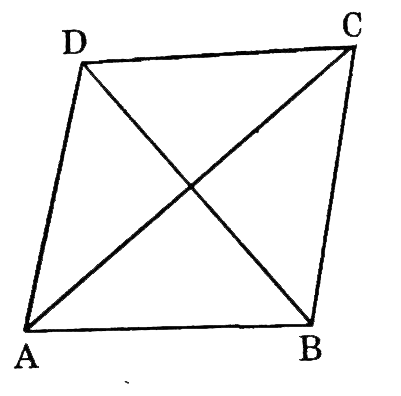
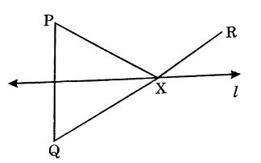
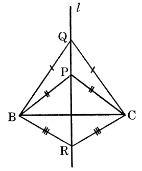
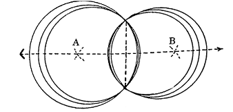
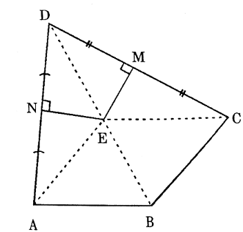
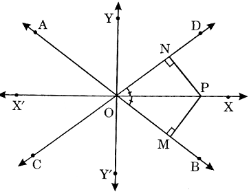
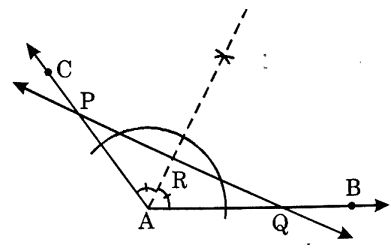
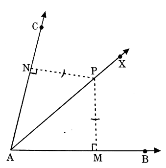
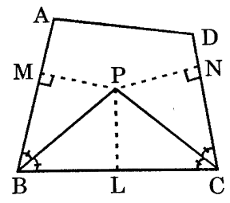

Solved examples
Example 1:
The diagonals of a quadrilateral bisects each other at right angles. Show that the quadrilateral is a rhombus.
Solution:
Given, ABCD is a quadrilateral. AC and BD are its diagonals which bisect each other at right angles.
To prove: Quadrilateral ABCD is a rhombus.
Proof: Since AC bisects BD at right angles (given)
\( \therefore \) AC is the perpendicular bisector of line segment BD.
and
\( \begin{align} \therefore \left. \begin{array}{cc} AB = CD \\\\ CB = CD \end{array} \right\rbrace \end{align} \) ........(1)
Again, BD bisects AC at right angles (given)
\( \therefore \) BA = BC and DA = DC ... (2)
From (1) and (2), AB = BC = CD = DA
\( \therefore \) Quadrilateral ABCD is a rhombus.

Example 2:
What is the locus of points which are equidistant from three given non-collinear points A, B and C ? Justify your answer
Solution:
Let A, B and C be three non-collinear points.
Join AB and BC.
Draw the perpendicular bisectors of AB and BC.
Let they meet each other at O.
Since, O lies on the right bisector of AB.
\( \therefore \) OA = OB
Similarly, OB = OC.
\( \therefore \) OA = OB = OC
Hence the point 0 is equidistant from A, B and C.
Now since the right bisectors of AB and BC are two non-parallel lines, hence they have only one point in common and the point is O.
\( \therefore \) O is the only point equidistant from A, B and C.
Hence the required locus is the centre of the circle through three given non-collinear points.
Example 3:
l is the perpendicular bisector of the line segment PQ and R is a point on the same side of l as P. The line segment QR intersects l at X. Prove that
PX + XR = QR.
Solution:
Since, X lies on the perpendicular bisector of PQ.
\( \therefore \) PX = QX
Now, PX + XR = QX + XR
= QR.

Example 4:
Triangles PBC, QBC and RBC are three isosceles triangles on the same base BC. Show that P, Q and R are collinear.
Solution:
Given, triangles PBC, QBC, QBC, RBC such that PB = PC, QB = QC, RB = RC.
To prove: P, Q, R are collinear.
Proof : Since, \( \triangle {PBC} \) is isosceles. (given)
\( \therefore \) PB = PC.
Now the locus of a point equidistant from B and C is the perpendicular bisector of line segment BC. Let us name it l.
\( \therefore \) P lies on l...........(1)
Similarly, Q lies on l and R lies on l. ... (2) .......(2)
From (1) and (2), P, Q, R are collinear.

Example 5:
How many circles can be drawn through two given points?
Solution:
Let A and B be two given points. AB is the line segment joining A and B. Let line 1 be the perpendicular bisector of line segment AB.

Then every point on l will be equidistant from A and B. Also there are infinite number of points on 1. Let P be one of these points.
With P as centre and PA or PB as radius, we can draw a circle passing through A and B.
An infinite number of such circles can be drawn through A and B with their centres lying on l.
Example 6:
In a quadrilateral ABCD, AB = BC. The perpendicular bisectors of AD and CD meet at E. Prove that BE in the bisector of \( \angle{ABC} \)
Solution:
Construction: Join EA, EB, EC and ED.
Proof : Since, E lies on the perpendicular bisector of AD.
\( \therefore \) EA = ED ... (1)
Since, E lies on the perpendicular bisectot of CD.
\( \therefore \) EC = ED ... (2)
From (1) and (2),
EA = EC
Now, in \( \triangle s \) EAB and ECB,
EA = EC (proved above)
AB = BC (given)
EB = EB (common side)
\( \therefore \triangle EAB \cong \triangle ECB (SSS Cong. Axiom) \)
\( \therefore \angle{ABE} = \angle{CBE} \) (c.p.c.t)
Hence BE is the bisector of \( \angle{ABC} \)

Example 7:
The locus of a point equidistant from two intersecting lines is the pair of lines bisecting the angles formed by the given lines.
Solution:
Part I: Given, two lines AB and CD intersect at O forming the four angles \( \angle{COA}, \ \angle{BOD}, \ \angle{AOD} \) and \( \angle{COB} \)
X'OX and Y'OY are the pair of lines bisecting the four angles.
P is a point in the plane such that if \( PM \perp AB \) and \( PN \perp CD \) , then PM = PN.
To prove: P is a point of \( (X'OX) \cup (Y'OY) \)
Construction: Join OP.
Proof: Suppose P is a point in the interior of \( \angle{BOD} \) , so that \( PM \perp AB \) and \( PN \perp CD \) and PM = PN.
Now, in right \( \triangle s \) OPM and OPN.
OP = OP (common side)
PM = PN (given)
\( \therefore \triangle{OPM} \cong \triangle{OPN} \) (R.H.S. Cong. Axiom)
\( \therefore \angle{POM} = \angle{PON} \) (c.p.c.t)
\( \Rightarrow \) P lies on OX, the bisector of \( \angle{POM} \)
Hence, P lies on \( (X'OX) \cup (Y'OY). \)

Similarly, if P lies in the interior of any of the other three angles, then P) is on \( (X'OX) \cup (Y'OY). \) .
Also, O is the only point of AB and CD, which is equidistant from both the lines, and 0 is certainly on \( (X'OX) \cup (Y'OY). \) .
Thus, in all cases,
P lies on \( (X'OX) \cup (Y'OY). \) .
Part - II (converse) :
Given, two linea AB and CD intersect at O, forming four angles \( \angle{COA}, \angle{AOD}, \ \angle{DOB} \) and \( \angle{BOC} \) .
X'OX and Y'OY are the lines bisecting the four angles. P is a point of \( (X'OX) \cup (Y'OY) \) such that \( PM \perp AB. \ PN \perp CD. \)

To prove: PM = PN
Proof : If P is a point other than O then in rights \( \triangle{s} \) OPM and OPN.
OP = OP (Common side)
\( \angle{POM} = \angle{PON} \) (given)
\( \angle{OMP} \cong \angle{ONP} \) (given)
\( \therefore \triangle{OPM} \cong \triangle{OPN} \) (SAS tong. Axiom)
Hence, PM = PN (c.p.c.t)
Example 8:
In \( \triangle{ABC} \) , the bisector AX of \( \angle{A} \) intersects BC at X. XL \( \perp \) AB and XM \( \perp \) AC are drawn. is XL = XM?
Why or why not ?
Solution:
in \( \triangle s \) ALX and AMX,
since AX bisectors LA .
\( \therefore \angle{LAX} = \angle{MAX} .....(1) \)
Also \( \therefore \angle{ALX} = \angle{AMX} \ \ \ (Each = 90^{ \circ}) .....(2) \)
AX = AX (common side) .....(3)
\( \therefore \triangle{ALX} \cong \triangle{AMX} \) (By SAS cong.Axiom)
\( \therefore \) XL = XM (c.pc.t)
Aliter : Since X is a point on the bisector of \( \angle{BAC} \) therefore, X is equidistant from the arms AB and AC of \( \angle{BAC} \)
Also \( XL \perp AB \) and \( XL \perp AC \)
\( \therefore \) XL = XM.
Example 9:
Given \( \angle{BAC} \) , a line intersects the arms of \( \angle{BAC} \) at P and Q. How will you locate. a poi of line segment PQ, which is equidistant from AB and AC. Does such a point always exist?
Solution:
We shall draw the bisector AR of \( \angle{BAC} \) . Let AR intersect PQ at R.
Then R is the required point, which is equidistant from AB and AC. Such a point will always exist.

Example 10:
Given \( \angle{BAC} \) , determine the locus of a point which lies in the interior of L BAC and is equidistant from the two lines AB and AC.
Solution:
Proof: Let P be a point which lies in the interior of \( \angle{BAC} \) .
\( PM \perp AB \) and \( PN \perp AC. \)
P is equidistant from AB and AC.
i.e., PM = PN
Now in right triangles APM and APN
Hyp AP = HYP.AP (common side)
PM = PN (given)
\( \therefore \triangle{APM} \cong \traingle{APN} \) (R.H.S Cong.Axiom)
\( \therefore \angle{PAM} = \angle{PAN} \) (c.p.c.t)
\( \Rightarrow \) P is the equidistant from AB and AC.
Hence the locus of P is the ray AX, the bisector of \( \angle{BAC} \)
In \( \angle s \) APM and APN,
AP = AP (Common side)
\( \angle{PAM} = \angle{PAN} \) ( Since, AX is the bisector of \( \angle{BAC} \) ) (given)
\( \angle{PMA} = \angle{PNA} \) (Each = \( 90^{ \circ} \) )
\( \therefore \triangle{APM} \cong \traingle{APN} \) (SAS Cong. Axiom)
\( \therefore \) PM = PN (c.p.c.t)
\( \Rightarrow \) P is the equidistant from AB and AC.
Hence the locus of P is the ray AX, the bisector of \( \angle{BAC} \) .
Example 11:
The bisectors of \( \angle{B} \) and \( \angle{C} \) of a quadrilateral ABCD intersect in P. Show that P is equidistant from the opposite sides AB and CD.
Solution:
Given, a quadrilateral ABCD. Bisectors of \( \angle{B} \) and \( \angle{C} \) meet in P.
\( PM \perp AB \) and \( PN \perp CD \)
To prove: PM = PN.
Construction: Draw \( PL \perp BC \) .
Proof Since, P lies on the bisector of \( \angle{B} \) . (given)
\( \therefore \) PM = PL ... (1)
Since, P lies on the bisector of \( \angle{C} \) .
\( \therefore \) PL = PN ... (2)
From (1) and (2),
PM = PN.

Example 12:
Given a \( \triangle{ABC} \) with unequal sides. Find a point which is equidistant from B and C as well as from AB and AC.
Solution:
Draw the right bisector of BC and bisector of \( \angle{A} \) . Let they meet at O.
Then O is the required point.

To prove: Since, O lies on the right bisector of BC
\( \therefore \) O is equidistant from B and C.
Again, since O lies on the bisector of \( \angle{A} \) , formed by AB and AC
\( \therefore \) O is equidistant from AB and AC.
Example 13:
Prove that the common chord of two intersecting circles is bisected at right angles by the line of centres.
Solution:
Given, two intersecting circles with centres C and D. AB is their common chord.
To prove: AB is bisected by CD at right angles.
Proof: Since, CA = CB (Radii of the same circle)
\( \therefore \) C lies on the right bisector of AB.
Similarly, D lies on the right bisector of AB.
Therefore, CD is the right bisector of AB.
Example 14:
Find the locus of the centre of a circle of radius r touching externally a circle of radius R.
Solution:
Let a circle of radius r (with centre B) touch a circle of radius R (with centre A) at C. Then ACB is a straight line and AB = AC + CB = R + r.
Thus, B moves such that its distance from fixed point A remain constant and is equal to R + r.
Hence the locus of B is a circle whose centre is A and radius equal to R + r.
Example 15:
Plot the following points on the graph below.
-
P (5, 0)
-
R (0, -3)
-
Q (4, -2)
-
S (2, 4)
Solution:
Example 16:
Write the coordinates of points A, B, C, D, E and F on the Cartesian plane.
Solution
A = (-2, 1),
B = (3, 4),
C (1, -3),
D = (-4, -2),
E = (0, 3),
F = (4, 0).
Example 17:
The diagram shows a Cartesian plane. The y-coordinate of point P is -4
Which of the following points A, B, C, D is likely to be point P?
Solution
(D)
Find the coordinates of the points A, B, C and D.
A = (-2, 4), B = (-4, -3), C = (4, 2), D = (3, -4)
Example 18:
The diagram shows all the four quadrants in a Cartesian plane.
Which of the points shown below lies in the 3rd quadrant?
-
(-4, 2)
-
(4, 2)
-
(3, -5)
-
(-5, -2)
Solution
The x-coordinate and the y-coordinate of any point in the 3rd quadrant are both negative.
Example 19:
State the scale for each coordinate axis in the following diagram.
Solution
1 unit on the x-axis represents 2 units.
1 units on the y-axis represents 3 units.
\( \therefore \) The scale for x-axis is 1 : 2 and the scale for y-axis is 1 : 3.
Example 20:
State the coordinates of points A, B, C and D on the Cartesian plane below.
Solution
The coordinates of the points are: A(-6, 10), B(2, 20), C(4, -10), D-4, -)
Example 21:
On the following Cartesian plane, the scale on the x-axis is 1 : 2, while the scale on the y-axis is 1 : 10.
Plot the following points:
P(4, 30), Q(-6, 10), R(-4, -40), S(6, -20)
Solution
Example 22:
On the Cartesian plane below,
-
mark the point A(-3, -2),
-
write the coordinates of the point B.
Solution
Example 23:
Sketch and state the loci of the moving objects described below.
-
A girl on playing on a swing
-
The shoe of a girl riding a bicycle
Solution
-
An arc of a circle
-
A circle
Example 24:
TUVW is a square. Construct the locus of a moving point which is always equidistant from TU and TW.
Solution
The locus of the point is the angle bisector of \( \angle{UTW} \)
\( \therefore \) TV is the locus of the point
Example 25:
A point moves so that it is always 4 cm from a straight line MN. Which of the diagrams shows the locus of the point?
Solution
(d)
The loci are two parallel lines
Example 26:
Which of the following diagrams shows the locus of a point moving at a fixed distant from a fixed point?
Solution
(b)
The locus of the point is a circle.
Example 27:
The diagram shows a rhombus of sides 13 cm. PTR and QTS are straight lines and TR = 5 cm.
Which among the points A, B, C and D is equidistant from PQ and QR but less than 12 cm from Q?
Solution
(A)
In the rhombus PQRS, QR = 13 cm and TR = 5 cm.
\( \therefore \) QT = 12 cm
Both A and C are equidistant from PQ and QR but only A is less than 12 cm from Q.
Example 28:
In the diagram, \( P^|c \) is the image of P under a translation.
Plot the image of points Q, R and S as \( Q^|, \ ^| \) and \( S^| \)
Solution
In the rhombus PQRS, QR = 13 cm and TR = 5 cm.
\( \therefore \) QT = 12 cm
Both A and C are equidistant from PQ and QR but only A is less than 12 cm from Q.
Example 29:
In the diagram, M' N' is the image of line MN under a translation. Describe the translation.
Solution
Translation of MN \( \rightarrow \) M' N' is a movement through a distance of 3 units to the right and 1 unit upwards.
Example 30:
In the diagram, \( \triangle{P' Q' R'} \) is the image of \( \triangle{PQR} \) under a translation. Describe the translation in the form \( \left( \frac{a}{b} \right) \)
Solution
Every point on \( \triangle{PQR} \) is moved 5 units to the right parallel to the x-axis and 4 units upwards parallel to the y-axis. The translation is \( \left( \frac{5}{4} \right) \)
Example 31:
Write the coordinates of the image of A(-2, 5) under a translation \( \begin{align} \left( \begin{array}{cc} 4 \\\\ - 3 \end{array} \right) \end{align} \)
Solution
A' = [-2 + 4, 5 + (-3)] = (2, 2)
\( \therefore \) The coordinates of image A' are (2, 2).
Example 32:
In the diagram, the point P is reflected in the line XY. Draw the image of P in the diagram.
Solution
Notice that the line PP' is perpendicular to the line of reflection XY, or axis of reflection.
Example 33:
In the diagram, the figure P is reflected in the line XY. Draw the image of Pin in the
Solution
Note Point Q is on the axis of reflection and remains unchanged under the reflection.
Example 34:
The diagram shows a line PQ. Construct the image of PQ under a reflection in the line XY.
Solution
Note The axis of reflection XY is the perpendicular bisector of QQ' and PP'. It also acts as the axis of symmetry between the object and its image.
Example 35:
In the diagram, figure (II) is the image of figure (I) under a reflection.
Describe the reflection
Solution
Figure (II) is the image of figure (I) under a reflection in the y-axis.